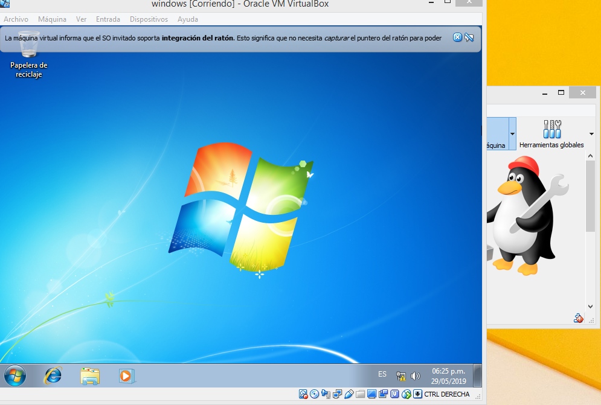

CONFIGURACIÓN DEL SISTEMA OPERATIVO
Es importante que se realicen ajustes el sistema operativo para hacerlo más seguro. Ya que al estar configurando el sistema operativo se puede observar que
Para evitar errores de configuración, es importante leer los requerimientos mínimos de una configuración y que estos iguales o estén por debajo de los del hardware De todas formas, un sistema operativo puede restaurarse a una configuración anterior o iniciarse en modo a prueba de fallos para modificar su configuración, cualquiera de estos dos métodos es válido a la hora de enfrentarse a un problema de configuración. Si ninguno de estos métodos funciona, deberá reinstalar el sistema operativo o el programa. Configuración del S.O:
2.- Anotar la contraseña y clic en siguiente.
3.- Clave del producto clic en siguiente.
4.- Seleccionar una de las 3 opciones que nos muestra para proteger el equipo.
5.- Colocar zona horaria clic en siguiente.
6.- Seleccionar la red y esperar a que inicie.
7.- Esta lista la máquina virtual.

VIDEO